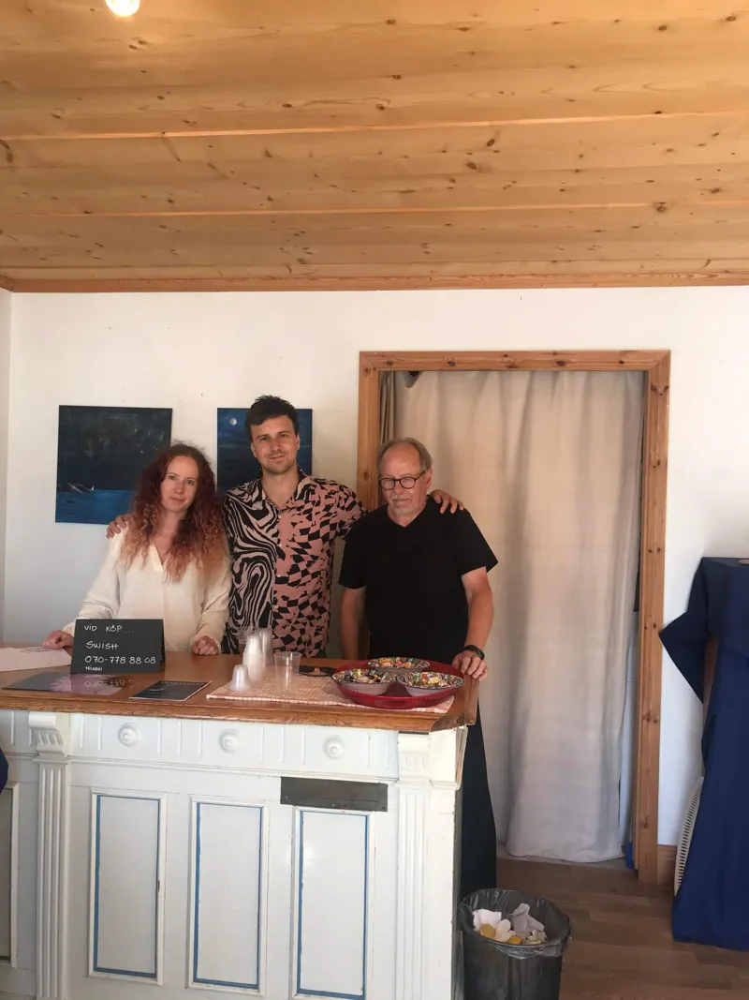

Ateljé Sällström
Gemensamma rötter, egna uttryck
Välkomna! Vi är Lennart ”Sälen”, Robin, Ninni och Barbro — en familj som förenas av konsten. Allt från livfulla stadslandskap och abstrakta akrylmålningar till digital konst och naturfotografi skapar vi tillsammans under ett gemensamt tak.
Utforska vårt galleri
Konst som förenar
Ateljé Sällström skapades för ett par år sedan när vi enades om att göra något kreativt tillsammans efter många år av arbete för och tillsammans med andra aktörer.
Vårt mål och syfte är att bibehålla en gemenskap och ett umgänge, och därifrån utveckla, inspirera och skapa tillsammans. Varje verk bär med sig en del av vår gemensamma historia och våra individuella konstnärliga röster.
Läs mer om ossVåra konstnärer

Lennart Sällström
F.d. bildlärare som målar i akryl med starka färger, oftast med rött som bas. Inspirerad av Södermalm skapar han stadstavlor fulla av liv och energi.

Robin Sällström
Utbildad inom design och media skapar Robin unika och spännande konstverk med hjälp av film, fotografi och digitala verktyg.

Ninni Sällström
Med mycket fantasi har kreativiteten tagit många uttryck – från kreativt skrivande och naturfotografi till målningar i flytande akryl och akvarell.
Utvalda verk
Ett urval av konstverk från våra tre konstnärer.